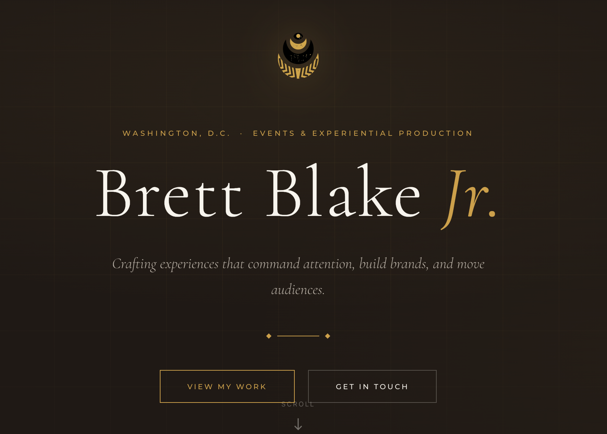

Personal site
My home base on the web — designed, built and deployed from scratch as a fast, responsive single-page site.
- Problem
- Needed one clear place to tell my story and route visitors to the right next step.
- Role
- Product owner, designer and developer — scope, IA, build, deploy.
- Stack
- React · Vercel
